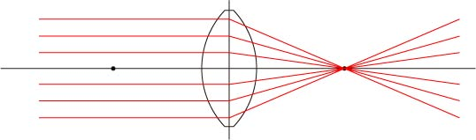

さて， 今まで説明してきたように，レンズとは，
1点から出た光を平行光にする 平行光を１点に集光する
ものとして，定義してきました．

しかし，実際には１点には集光しないのです． そのことを，
収差
と呼びます． 収差にはいろいろなタイプがあります．
球面収差 コマ収差 非点収差 像面湾曲収差 ディストーション 色収差
などです． これらがあると，せっかくの像のクオリティが落ちてしまいます． それでは，それぞれの収差について説明していきましょう． まずは，球面収差，から．